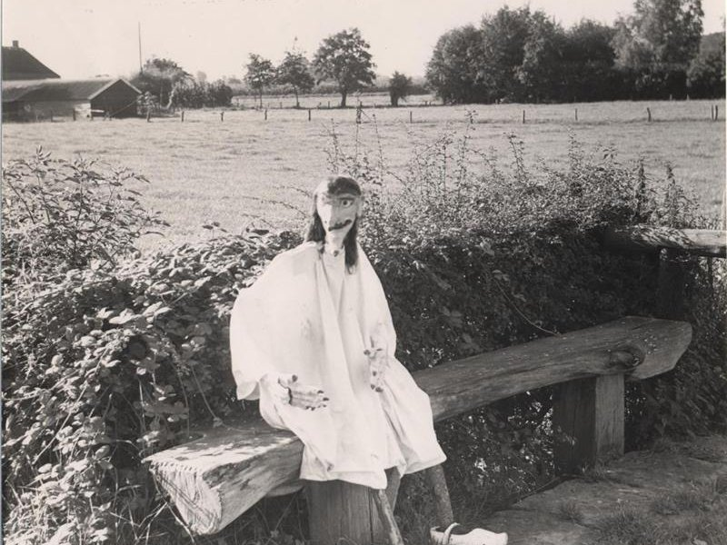

3. Facade Sign




If you look at the tip of the roof, you'll see a gable ornament.
Facade marks originally arose from the intersecting wind braces—the planks between the facade and the roof that were intended to keep the wind out.
The ends were often decorated with animal heads, usually horse heads, because the horse was the farmer's most valuable possession.
In folk culture, the horse was also seen as a symbol of fertility or as protection against misfortune.
Traditionally, facade symbols served primarily to ward off misfortune.
Farmers, so to speak, sought the help of supernatural forces to ward off misfortune and disaster.
Life in Twente was often hard.
The soil was mostly poor sandy soil, interspersed with small fertile patches in the stream valleys.
A poor harvest caused by drought, rain, or disease could already lead to famine.
Natural disasters, wars, and livestock diseases could also cause major problems.
In addition, people believed in white witches, hellhounds, and evil spirits, which had to be kept out of the house.
Rye was the staple food, but ergot fungus sometimes grew in it.
Anyone who ate this might have hallucinated, which may have contributed to stories about wandering ghosts.
Storefront signs have changed over time.
Wil je weten hoe ze veranderden, kijk dan in de Atlas van Ooit via de knop "Meer info".
The next story is still to come on Los Hoes.
There is a small chapel made of dried flax, an important crop for farmers in Twente.